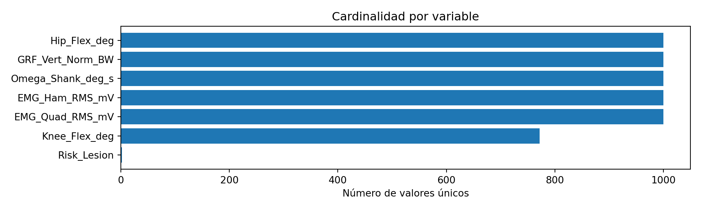
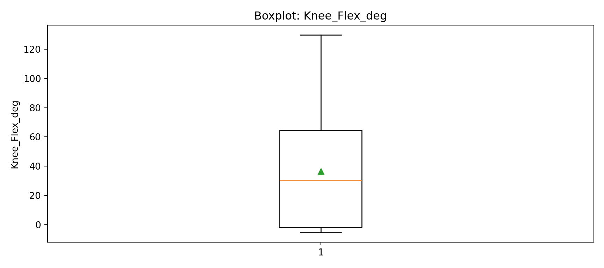
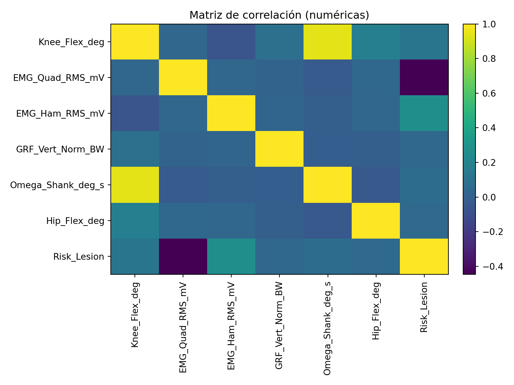
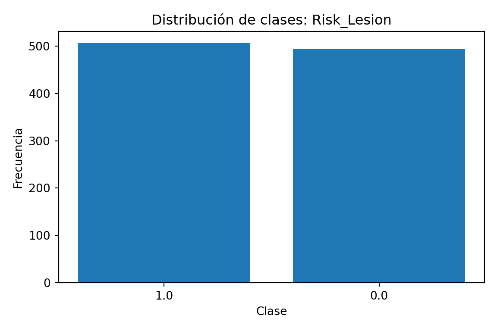

# install.packages(c("DiagrammeR", "reticulate", "kableExtra", "tidyverse", "knitr", "cowplot", "ggfx"))
library("DiagrammeR")
library("reticulate")
library("kableExtra")
library("tidyverse")
library("knitr")
library("cowplot")
library("ggfx")
knitr::opts_chunk$set(echo = FALSE)
def.chunk.hook <- knitr::knit_hooks$get("chunk")
knitr::knit_hooks$set(chunk = function(x, options) {
x <- def.chunk.hook(x, options)
ifelse(options$size != "normalsize", paste0("\n \\", options$size, "\n\n", x, "\n\n \\normalsize"), x)
})Evaluación de la Calidad de los Datos
Análisis Exploratorio para Regresión (knee_flex_deg) y Clasificación (Risk_Lesion)
ASIM
Introducción
La evaluación de la calidad de los datos es una etapa crítica del análisis exploratorio, pues condiciona la validez estadística y la interpretabilidad de los modelos. En este documento se operacionalizan criterios y procedimientos para:
- Regresión:
knee_flex_deg(continua). - Clasificación:
Risk_Lesion(categórica).
<class 'pandas.core.frame.DataFrame'>
RangeIndex: 1000 entries, 0 to 999
Data columns (total 7 columns):
# Column Non-Null Count Dtype
--- ------ -------------- -----
0 Knee_Flex_deg 1000 non-null float64
1 EMG_Quad_RMS_mV 1000 non-null float64
2 EMG_Ham_RMS_mV 1000 non-null float64
3 GRF_Vert_Norm_BW 1000 non-null float64
4 Omega_Shank_deg_s 1000 non-null float64
5 Hip_Flex_deg 1000 non-null float64
6 Risk_Lesion 1000 non-null float64
dtypes: float64(7)
memory usage: 54.8 KB1. Identificación de valores faltantes
Se cuantifican porcentajes de celdas vacías y se priorizan acciones: eliminar (>60%), imputar (30–60%), o evaluar impacto (<30%).
Porc_Faltantes_%
Knee_Flex_deg 0.0
EMG_Quad_RMS_mV 0.0
EMG_Ham_RMS_mV 0.0
GRF_Vert_Norm_BW 0.0
Omega_Shank_deg_s 0.0
Hip_Flex_deg 0.0
Risk_Lesion 0.0Visualización de valores faltantes por variable
([<matplotlib.axis.YTick object at 0x7c2c195c56a0>, <matplotlib.axis.YTick object at 0x7c2c1955e0d0>, <matplotlib.axis.YTick object at 0x7c2c195d20d0>, <matplotlib.axis.YTick object at 0x7c2c195d2850>, <matplotlib.axis.YTick object at 0x7c2c195d2fd0>, <matplotlib.axis.YTick object at 0x7c2c195d3750>, <matplotlib.axis.YTick object at 0x7c2c195d3ed0>], [Text(0, 0, 'Knee_Flex_deg'), Text(0, 1, 'EMG_Quad_RMS_mV'), Text(0, 2, 'EMG_Ham_RMS_mV'), Text(0, 3, 'GRF_Vert_Norm_BW'), Text(0, 4, 'Omega_Shank_deg_s'), Text(0, 5, 'Hip_Flex_deg'), Text(0, 6, 'Risk_Lesion')])
2. Detección de cardinalidad irregular
Se inspecciona el número de valores únicos por variable para detectar: cardinalidad 1 (sin información), codificaciones erróneas o cardinalidad excesiva.
Cardinalidad
Risk_Lesion 2
Knee_Flex_deg 772
EMG_Ham_RMS_mV 1000
EMG_Quad_RMS_mV 1000
GRF_Vert_Norm_BW 1000
Omega_Shank_deg_s 1000
Hip_Flex_deg 1000Distribución de cardinalidad (todas las columnas)
([<matplotlib.axis.YTick object at 0x7c2c19456710>, <matplotlib.axis.YTick object at 0x7c2c1949ccd0>, <matplotlib.axis.YTick object at 0x7c2c1949d450>, <matplotlib.axis.YTick object at 0x7c2c1949dbd0>, <matplotlib.axis.YTick object at 0x7c2c1949e350>, <matplotlib.axis.YTick object at 0x7c2c1949ead0>, <matplotlib.axis.YTick object at 0x7c2c1949f250>], [Text(0, 0, 'Risk_Lesion'), Text(0, 1, 'Knee_Flex_deg'), Text(0, 2, 'EMG_Ham_RMS_mV'), Text(0, 3, 'EMG_Quad_RMS_mV'), Text(0, 4, 'GRF_Vert_Norm_BW'), Text(0, 5, 'Omega_Shank_deg_s'), Text(0, 6, 'Hip_Flex_deg')])
3. Detección de valores atípicos (Outliers)
Se consideran dos enfoques: IQR de Tukey y z-score.
from typing import Tuple, Dict
def outlier_bounds_iqr(series: pd.Series, k: float = 1.5) -> Tuple[float, float]:
s = series.dropna().astype(float)
q1 = np.percentile(s, 25)
q3 = np.percentile(s, 75)
iqr = q3 - q1
lo = q1 - k*iqr
hi = q3 + k*iqr
return lo, hi
def outlier_summary(df_num: pd.DataFrame, method: str = "iqr", k: float = 1.5, z: float = 3.0) -> pd.DataFrame:
rows = []
for col in df_num.columns:
s = df_num[col].dropna().astype(float)
if s.empty:
continue
if method == "iqr":
lo, hi = outlier_bounds_iqr(s, k=k)
out = ((df_num[col] < lo) | (df_num[col] > hi)).sum()
rows.append((col, lo, hi, int(out)))
else:
m = s.mean(); sd = s.std(ddof=0)
if sd == 0:
rows.append((col, np.nan, np.nan, 0))
else:
out = ((np.abs((df_num[col]-m)/sd)) > z).sum()
rows.append((col, m - z*sd, m + z*sd, int(out)))
return pd.DataFrame(rows, columns=["Variable", "Límite_inferior", "Límite_superior", "Conteo_outliers"])
df_num = df.select_dtypes(include=[np.number])
iqr_tbl = outlier_summary(df_num, method="iqr", k=1.5).sort_values("Conteo_outliers", ascending=False)
z_tbl = outlier_summary(df_num, method="z", z=3.0).sort_values("Conteo_outliers", ascending=False)
iqr_tbl.head(15), z_tbl.head(15)( Variable Límite_inferior Límite_superior Conteo_outliers
0 Knee_Flex_deg -101.289727 164.359342 0
1 EMG_Quad_RMS_mV -0.101106 0.366573 0
2 EMG_Ham_RMS_mV -0.092222 0.302515 0
3 GRF_Vert_Norm_BW -0.630861 1.957452 0
4 Omega_Shank_deg_s -801.247432 784.800697 0
5 Hip_Flex_deg -34.877758 64.126131 0
6 Risk_Lesion -1.500000 2.500000 0, Variable Límite_inferior Límite_superior Conteo_outliers
0 Knee_Flex_deg -74.265149 147.551616 0
1 EMG_Quad_RMS_mV -0.068715 0.334233 0
2 EMG_Ham_RMS_mV -0.060132 0.272798 0
3 GRF_Vert_Norm_BW -0.479935 1.786190 0
4 Omega_Shank_deg_s -694.930515 679.530591 0
5 Hip_Flex_deg -28.294709 57.705241 0
6 Risk_Lesion -0.993892 2.005892 0)Boxplots univariados seleccionados (matplotlib)
cols_plot = [c for c in df_num.columns if c.lower() in ["knee_flex_deg", "bodymass", "height"]]
if not cols_plot:
# Selección automática de hasta 3 numéricas
cols_plot = df_num.columns.tolist()[:3]
fig, axes = plt.subplots(nrows=len(cols_plot), ncols=1, figsize=(9, 4*len(cols_plot)))
if len(cols_plot) == 1:
axes = [axes]
for ax, col in zip(axes, cols_plot):
ax.boxplot(df_num[col].dropna().astype(float), vert=True, showmeans=True)
ax.set_title(f"Boxplot: {col}")
ax.set_ylabel(col)
plt.tight_layout()
plt.show()
4. Validez contextual (reglas de plausibilidad)
Se definen reglas de plausibilidad fisiológica/experimental y se generan banderas de validación.
flags = {}
if "knee_flex_deg" in df.columns:
s = pd.to_numeric(df["knee_flex_deg"], errors="coerce")
flags["knee_flex_deg_out_of_range"] = ~s.between(0, 180) # rango articular plausible (ajuste si aplica)
if "bodymass" in df.columns:
s = pd.to_numeric(df["bodymass"], errors="coerce")
flags["bodymass_out_of_range"] = ~s.between(30, 300) # ejemplo amplio; ajuste según protocolo
val_flags = pd.DataFrame(flags) if flags else pd.DataFrame()
val_flags.sum() if not val_flags.empty else "No se definieron reglas de plausibilidad para las variables presentes."'No se definieron reglas de plausibilidad para las variables presentes.'5. Análisis de correlación (soporte a decisiones)
Para orientar transformaciones o selección de variables se explora la correlación entre numéricas.
Knee_Flex_deg EMG_Quad_RMS_mV ... Hip_Flex_deg Risk_Lesion
Knee_Flex_deg 1.000 0.028 ... 0.178 0.118
EMG_Quad_RMS_mV 0.028 1.000 ... 0.035 -0.446
EMG_Ham_RMS_mV -0.063 0.029 ... 0.033 0.273
GRF_Vert_Norm_BW 0.087 0.015 ... -0.009 0.037
Omega_Shank_deg_s 0.940 -0.029 ... -0.045 0.066
Hip_Flex_deg 0.178 0.035 ... 1.000 0.050
Risk_Lesion 0.118 -0.446 ... 0.050 1.000
[7 rows x 7 columns]Mapa de calor de correlaciones (matplotlib, sin seaborn)
plt.figure(figsize=(8,6))
im = plt.imshow(corr, interpolation='nearest', aspect='auto')
_ = plt.colorbar(im, fraction=0.046, pad=0.04)
_ = plt.xticks(ticks=np.arange(len(corr.columns)), labels=corr.columns, rotation=90)
_ = plt.yticks(ticks=np.arange(len(corr.index)), labels=corr.index)
_ = plt.title("Matriz de correlación (numéricas)")
_ = plt.tight_layout()
plt.show()
6. Estructura de clases para Risk_Lesion (si aplica)
Se inspecciona balance de clases y su impacto potencial en métricas y validación.
if "Risk_Lesion" in df.columns:
vc = df["Risk_Lesion"].value_counts(dropna=False)
vcp = df["Risk_Lesion"].value_counts(normalize=True, dropna=False).mul(100).round(2)
display_tbl = pd.DataFrame({"Conteo": vc, "Porcentaje_%": vcp})
display_tbl
else:
"La variable 'Risk_Lesion' no está presente en el dataset." Conteo Porcentaje_%
Risk_Lesion
1.0 506 50.6
0.0 494 49.4Barras de distribución de clases (matplotlib)
<Figure size 600x400 with 0 Axes>
<BarContainer object of 2 artists>
Text(0.5, 0, 'Clase')
Text(0, 0.5, 'Frecuencia')
Text(0.5, 1.0, 'Distribución de clases: Risk_Lesion')
7. Plan de Calidad de Datos (plantilla)
Use la siguiente plantilla para documentar problemas detectados y acciones.
| Variable | Problema detectado | Evidencia/Regla | Acción propuesta | Responsable | Fecha |
|---|---|---|---|---|---|
| knee_flex_deg | Outliers (>p99) | IQR/Z-score | Validar en ficha clínica / Winsorizar | Equipo clínico | AAAA-MM-DD |
| Risk_Lesion | Desequilibrio | Conteo de clases | Muestreo estratificado / Umbrales | Equipo DS | AAAA-MM-DD |
| bodymass | Faltantes 8% | % faltantes | Imputación mediana | Equipo DS | AAAA-MM-DD |
| Dominancia | Codificación heterogénea | Cardinalidad/etiquetas | Normalizar etiquetas | Equipo DS | AAAA-MM-DD |
8. Recomendaciones para el modelado posterior
- Regresión (
knee_flex_deg): evaluar transformaciones (log/sqrt) si hay asimetría marcada; controlar outliers (winsorización o RobustScaler). - Clasificación (
Risk_Lesion): balancear clases si hay desproporción; definir métrica principal (AUC/F1) y validación estratificada.